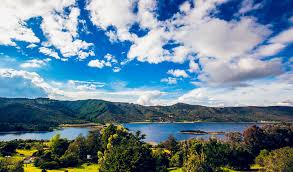
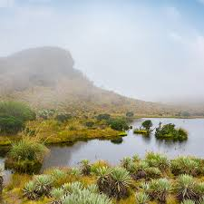
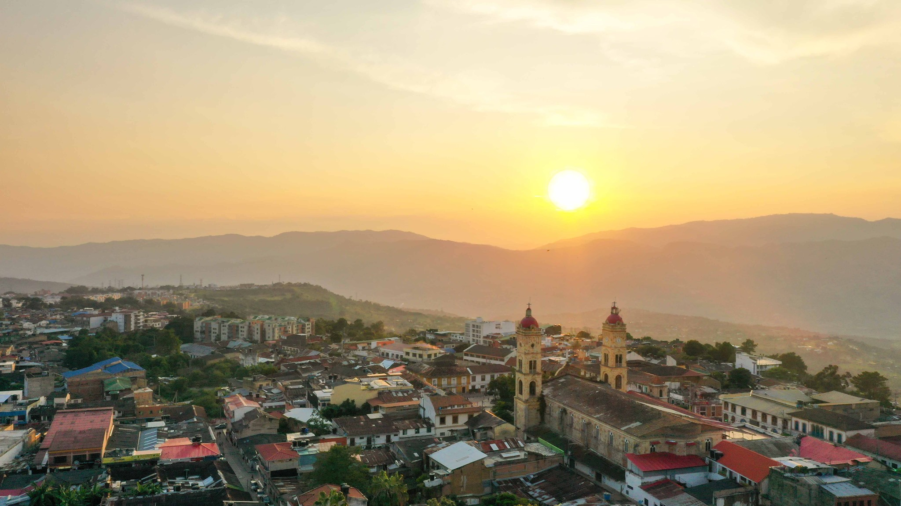

CUNDINAMARCA
“Gobernando: más que un plan”
Datos generales sobre Cundinamarca:
- Capital: Bogotá D.C., una de las ciudades más grandes y dinámicas de América Latina.
- Ubicación: Se encuentra en el centro de Colombia, limitando con varios departamentos.
- Extensión: Aproximadamente 24.210 km².
- Población: Más de 2.9 millones de habitantes.
- Historia: Fue uno de los primeros departamentos de la Gran Colombia y tiene una rica historia precolombina y colonial.

Atractivos turísticos:
- Bogotá: La capital ofrece una amplia variedad de atracciones, desde el histórico centro histórico hasta modernos centros comerciales y parques.
- Zipaquirá: Famosa por su Catedral de Sal, una impresionante construcción subterránea dentro de una antigua mina de sal.
- Villa de Leyva: Un pueblo colonial encantador con calles empedradas, casas blancas y arquitectura colonial.
- La Calera: Un destino popular para los amantes de la naturaleza, con hermosos paisajes y clima fresco.
- Guatavita: Legendaria laguna asociada a la leyenda del Dorado.

Datos curiosos:
- Cuna de la cultura muisca: Antes de la llegada de los españoles, Cundinamarca fue el hogar de la civilización muisca, conocida por sus elaborados rituales y su riqueza en oro.
- Producción agrícola: Cundinamarca es un importante productor de café, flores, frutas y hortalizas.
- Diversidad ecológica: El departamento cuenta con una gran variedad de ecosistemas, desde páramos hasta valles interandinos.
- Gastronomía: La comida típica de Cundinamarca es una mezcla de sabores indígenas y españoles, destacando platos como el tamal, la ajiaco y el cuchuco.
